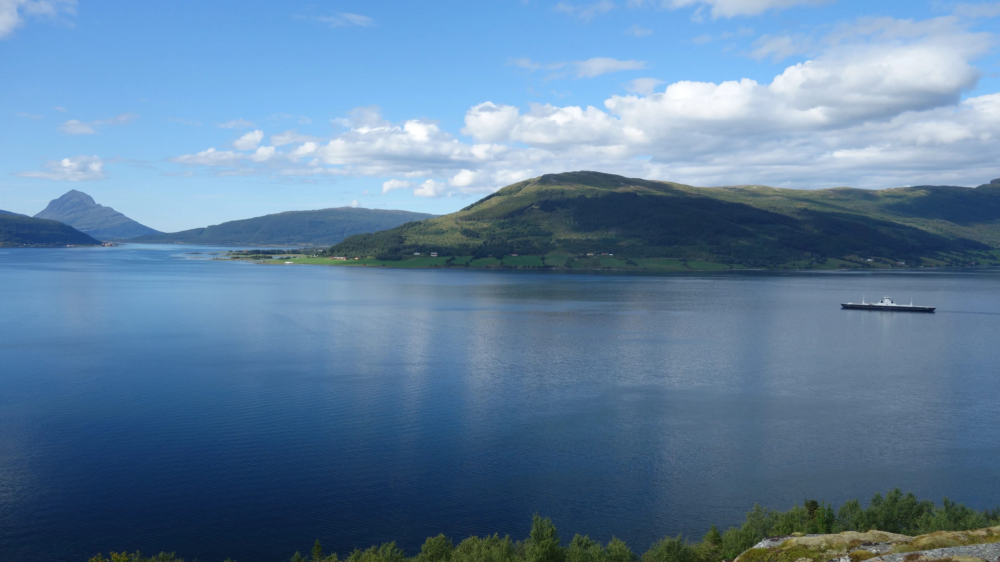
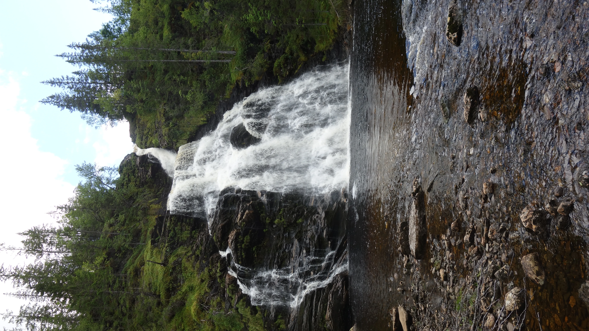

Find Moose
Bucket list
02.08.26

Das war meine bisherige Reise
In Oslo angekommen, bin ich erstmal mit der Bahn zum Holemenkollen gefahren, um mit eigenen Augen zu sehen, wo Fraziska Preuss 2025 den Gesamtweltcup für sich entschieden hat. Gänsehaut.

Wieder auf 0 m.o.h. (= Meter over havet) angekommen, bin ich hier in den Oslofjord gesprungen. Das Wasser war salzig, aber das zählt trotzdem nicht als "Take a swim in the ocean", weil ich umgeben von diesem Holzgerüst war.

Außerdem habe ich bisher folgende Leute getroffen:
- Im ICE: Ein Masseur, der auch astrologische Coachings anbietet
- Im Flixbus: Ein Bikepacker, der schon 22 Länder bereist hat und Schwedisch, Arabisch, Französisch und etwas Englisch kann
- Im Bahnhof Oslo: Eine Bikepackerin, die von Stockholm nach Helsinki geradelt ist
- Im Bahnhof Oslo: Ein Junge, der wollte, dass ich an einem Zweig Lavendel rieche
Abends ging's mir schlecht, wahrscheinlich wegen zu wenig Schlaf und zu vielen Bilar.
03.08.26
Heute bin ich nach 48h am Ziel angekommen. Ich möchte nie wieder zwei aufeinanderfolgende Nächte im Sitzen verbringen. Wenn ich geflogen wäre, hätte ich viel weniger die Abgelegenheit des Ortes gespürt, sondern es wäre viel mehr ein "Mal hier, mal dort" gewesen.
Die Familie und die andere Volunteer sind sehr nett zu mir. Ich bin gespannt, wie es morgen bei der Arbeit sein wird. Auf der Farm leben Pferde, Schafe, Hunde, Hühner und Hasen.
04.08.26
Heute habe ich im Regen gefrorene Fische gehackt, um damit Schlittenhunde zu füttern. Danach war ich bei der Fütterung von Hennen, jungen Hühnern, Katzen, Schafen und Pferden dabei. Danach habe ich Isolierungsplattenpakete von draußen nach drinnen getragen.
Nachmittags habe ich gegessen, geduscht, alles über Wohnmobile in der 40-Jahr-Jubiläumsausgabe von pro mobil gelesen und einen Spaziergang unternommen.
Abends gab's Pfannkuchen.
So sieht es hier aus:

06.08.26
Gestern habe ich ein Loch in eine Kellerwand gebohrhammert. Heute habe ich das im Keller stehende Wasser und den Schlamm durch dieses Loch nach draußen gespült. Davor habe ich Tiere gefüttert. Alle Tiere sind sehr chillig und brauchen nicht viel außer die Hunde. (Um die kümmert sich aber Nuccia).
Gestern haben wir einen kleinen Spaziergang unternommen. Das war die Aussicht (der Berg hinten links ist wahrscheinlich auf Tomma):

Wir sind bis zu einem Wasserfall gelaufen:

Ich habe Hallo (= Hei) und Tschüss (= Har det bra) auf Norwegisch von Lucia, die einen zweihundert Tage-Duolingostreak hat, gelernt.